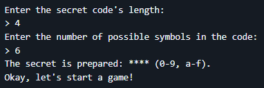
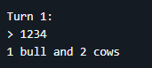
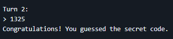

«Un classico gioco di logica, reinventato per allenare mente e codice»
Genere: Gioco da riga di comando, esercizio di logica e programmazione
Linguaggi utilizzati: Java
Link: github.com/mmilasi/bullsAndCows
Questo progetto nasce dalla volontà di riportare in vita un classico gioco di logica —
Bulls and Cows — attraverso una semplice interfaccia testuale. L'obiettivo è offrire
un'esperienza che stimoli il pensiero critico e la deduzione, sia per il giocatore che
per lo sviluppatore.
Il gioco inizia chiedendo al giocatore di definire la lunghezza del codice segreto e il
numero di simboli possibili, che possono includere cifre (0-9) e lettere minuscole (a-z).
Il programma genera quindi un codice segreto composto da simboli unici. Dopo ogni tentativo,
il giocatore riceve un feedback sotto forma di "bulls" e "cows":


